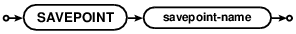
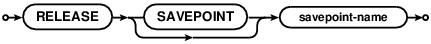

Choose any three.
|
|
SQLite里的SQL
SQL As Understood By SQLite
SAVEPOINT



SAVEPOINT是一个创建事务的方法，类似BEGIN 和 COMMIT，只不过SAVEPOINT和RELEASE命令是命名的并且可以支持嵌套。
SAVEPOINTs are a method of creating transactions, similar to
BEGIN and COMMIT, except that the SAVEPOINT and RELEASE commands
are named and may be nested.
SAVEPOINT命令用一个名字来开始一个新事务。事务名不需要保证唯一的。
在BEGIN...COMMIT的里外都可以使用SAVEPOINT开始一个事务。
如果一个SAVEPOINT是最外层的保存点，并且不在BEGIN...COMMIT中，那么他的行为和BEGIN DEFERRED TRANSACTION是一样的。
The SAVEPOINT command starts a new transaction with a name.
The transaction names need not be unique.
A SAVEPOINT can be started either within or outside of
a BEGIN...COMMIT. When a SAVEPOINT is the outer-most savepoint
and it is not within a BEGIN...COMMIT then the behavior is the
same as BEGIN DEFERRED TRANSACTION.
ROLLBACK TO命令可以将数据库的状态恢复到相对应的SAVEPOINT之后。注意这与ROLLBACK命令（不使用TO关键词）并不相同，ROLLBACK TO命令不会取消当前事务。取而代之的是ROLLBACK TO命令会从开始处重新启动事务。不过，所有介于之间的SAVEPOINT都会被取消掉
The ROLLBACK TO command reverts the state of the database back to what
it was just after the corresponding SAVEPOINT. Note that unlike that
plain ROLLBACK command (without the TO keyword) the ROLLBACK TO command
does not cancel the transaction. Instead of cancelling the transaction,
the ROLLBACK TO command restarts the transaction again at the beginning.
All intervening SAVEPOINTs are canceled, however.
RELEASE命令对于SAVEPOINT就像COMMIT一样。
RELEASE命令（引发所有保存点回退？？感觉有问题，TODO）并且最新的指定名字的保存点会从事务栈中移除。
在一个事务内部的RELEASE不会向数据库文件写入任何变动，仅仅是从事务栈上移除保存点，这样就不能再ROLLBACK TO这个保存点了。如果RELEASE命令释放了最外层的保存点，那么事务栈将会清空，这时RELEASE就像COMMIT一样。即使最开始是使用SAVEPOINT命令开始事务的，而不是BEGIN命令，也同样可以使用COMMIT命令来释放所有的保存点并提交事务。
The RELEASE command is like a COMMIT for a SAVEPOINT.
The RELEASE command causes all savepoints back to and including the
most recent savepoint with a matching name to be removed from the
transaction stack. The RELEASE of an inner transaction
does not cause any changes to be written to the database file; it merely
removes savepoints from the transaction stack such that it is
no longer possible to ROLLBACK TO those savepoints.
If a RELEASE command releases the outermost savepoint, so
that the transaction stack becomes empty, then RELEASE is the same
as COMMIT.
The COMMIT command may be used to release all savepoints and
commit the transaction even if the transaction was originally started
by a SAVEPOINT command instead of a BEGIN command.
如果RELEASE命令的savepoint-name没有匹配到当前事务栈中的保存点，那么就不会释放任何保存点，数据库也不会修改，RELEASE命令会返回一个错误。
If the savepoint-name in a RELEASE command does not match any
savepoint currently in the transaction stack, then no savepoints are
released, the database is unchanged, and the RELEASE command returns
an error.
注意，当内部的事务被提交（使用RELEASE命令）后，但是这个依然会被外层事务的ROLLBACK回滚。断电、程序崩溃、操作系统崩溃，这些都会引发最外层的事务回滚，并回滚在外层事务中所做的所有修改，即使已经被RELEASE命令"提交"了的修改也会被恢复。在最外层事务提交之前内容是不会真正被提交并写入磁盘的。
Note that an inner transaction might commit (using the RELEASE command)
but then later have its work undone by a ROLLBACK in an outer transaction.
A power failure or program crash or OS crash will cause the outer-most
transaction to rollback, undoing all changes that have occurred within
that outer transaction, even changes that have supposedly been "committed"
by the RELEASE command. Content is not actually committed on the disk
until the outermost transaction commits.
下面是一些关于对RELEASE命令的思考和理解方式。
There are several ways of thinking about the RELEASE command:
一些人吧SAVEPOINT中的RELEASE当做COMMIT的等价物，这个观点是可以接受的，只是有一点要记住，在内部事务提交后，所做的修改依然有可能会被后续的外层事务回滚。
Some people view RELEASE as the equivalent of COMMIT for a SAVEPOINT. This is an acceptable point of view as long as one remembers that the changes committed by an inner transaction might later be undone by a rollback in an outer transaction.对RELEASE的另一个看法是说RELEASE将内部的命名事务的修改合并到了父事务中，所以这个命名事务和父事务就变成了同一个事务。在RELEASE，这个命名的事务和他的父事务会被一起提交或者回滚。
Another view of RELEASE is that it merges a named transaction into its parent transaction, so that the named transaction and its parent become the same transaction. After RELEASE, the named transaction and its parent will commit or rollback together, whatever their fate may be.同样也可以吧保存点看做是事务时间线中的一个"标记"。在这种理解方式下，SAVEPOINT命令创建一个新标记，ROLLBACK TO命令沿着时间轴回退到标记的位置点，RELEASE命令从只是从时间线上移除标记，而不对数据库做任何变动。
One can also think of savepoints as "marks" in the transaction timeline. In this view, the SAVEPOINT command creates a new mark, the ROLLBACK TO command rewinds the timeline back to a point just after the named mark, and the RELEASE command erases marks from the timeline without actually making any changes to the database.
事务嵌套规则
Transaction Nesting Rules
一个事务必须在上一个事务提交或者回滚后才能开始。
The last transaction started will be the first
transaction committed or rolled back.
BEGIN命令只能在事务栈为空的时候使用，换句话说就是不能在其他事务中使用。如果在事务栈不为空的时候执行BEGIN命令，那么命令会失败并返回错误。
The BEGIN command only works if the transaction stack is empty, or
in other words if there are no pending transactions. If the transaction
stack is not empty when the BEGIN command is invoked, then the command
fails with an error.
COMMIT命令会提交所有未提交事务，并将事务栈清空。
The COMMIT command commits all outstanding transactions and leaves
the transaction stack empty.
RELEASE命令释放了指定名字savepoint-name的保存点后，会立即释放事务栈中在该保存点之后的所有保存点。
如果RELEASE命令导致事务栈为空了（当RELEASE命令从栈上释放了最外层的事务），那么事务将会被提交。
The RELEASE command starts with the most recent addition to the
transaction stack and releases savepoints backwards
in time until it releases a savepoint with a matching savepoint-name.
Prior savepoints, even savepoints with matching savepoint-names, are
unchanged.
If the RELEASE command causes the
transaction stack to become empty (if the RELEASE command releases the
outermost transaction from the stack) then the transaction commits.
不使用TO关键词的ROLLBACK命令会回滚所有的事务并将事务栈清空。
The ROLLBACK command without a TO clause rolls backs all transactions
and leaves the transaction stack empty.
使用TO子句的ROLLBACK命令会立即将事务回退到最新的匹配名字的SAVEPOINT位置。这个SAVEPOINT还依然在事务栈中，但是所有发生在SAVEPOINT点之后的数据库改动都会回滚。如果ROLLBACK TO命令中的savepoint-name没有匹配到事务栈中的SAVEPOINT，那么ROLLBACK命令会失败并返回一个错误，保持数据库状态不变。
The ROLLBACK command with a TO clause rolls back transactions going
backwards in time back to the most recent SAVEPOINT with a matching name.
The SAVEPOINT with the matching name remains on the transaction stack,
but all database changes that occurred after that SAVEPOINT was created
are rolled back. If the savepoint-name in a ROLLBACK TO command does not
match any SAVEPOINT on the stack, then the ROLLBACK command fails with an
error and leaves the state of the database unchanged.